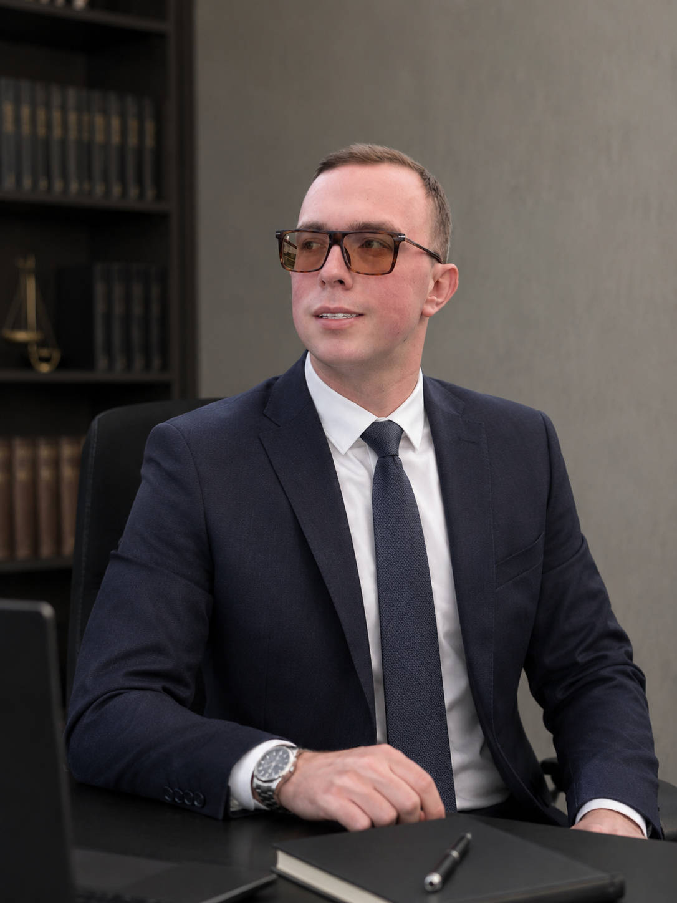

Persönliche Daten
Name: Illia Riabtsev
Adresse: Giershagener Weg 63, 58762 Altena
Geburtsdatum: 29.06.2001
Geburtsort: Kharkiv, Ukraine
Familienstand: ledig

Name: Illia Riabtsev
Adresse: Giershagener Weg 63, 58762 Altena
Geburtsdatum: 29.06.2001
Geburtsort: Kharkiv, Ukraine
Familienstand: ledig
12/2023 – 04/2024
Rechtsberater, Petrofanova Ksenia, Kharkiv
12/2021 – 02/2022
Rechtsanwaltsfachangestellter, MANITU GmbH, Kharkiv
01/2018 – 08/2021
Rechtsanwaltsfachangestellter, Advocacy Company Uljanow
Master – Internationales Recht, Karasin Universität Kharkiv (2021–2022)
Bachelor – Strafverfolgung, Universität für Innere Angelegenheiten Kharkiv (2018–2021)
Mittlere Reife, Kharkiv Specialized Boarding School (2007–2018)
Sprachen: Ukrainisch, Russisch (Muttersprache), Englisch (Grundkenntnisse), Deutsch (B2)